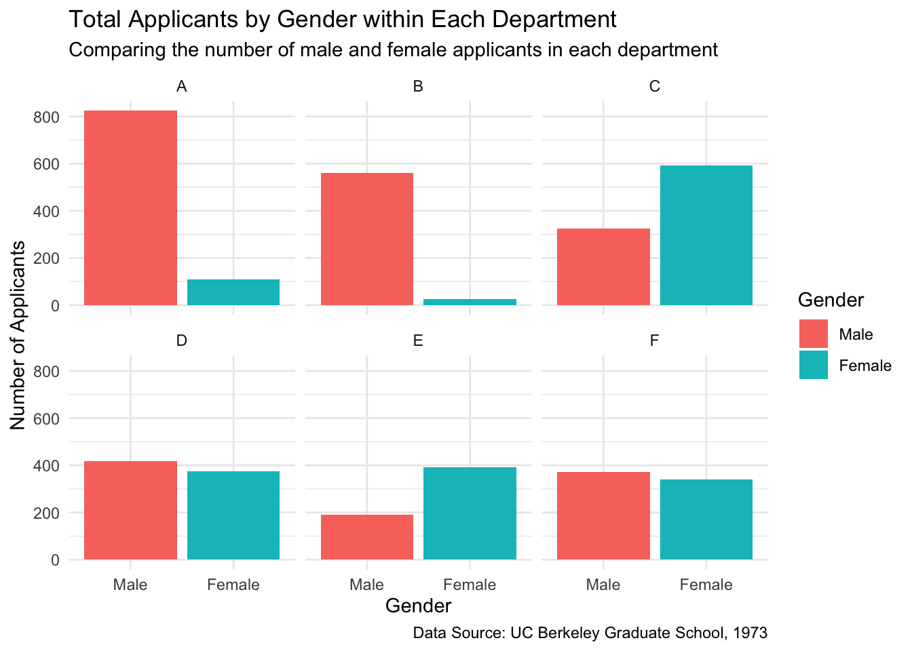
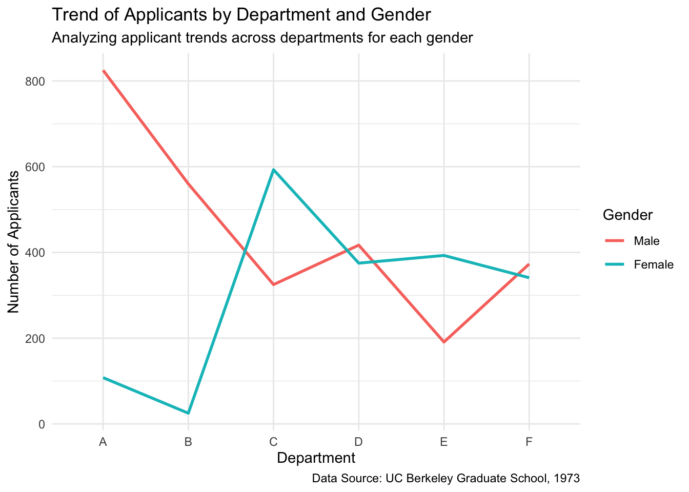
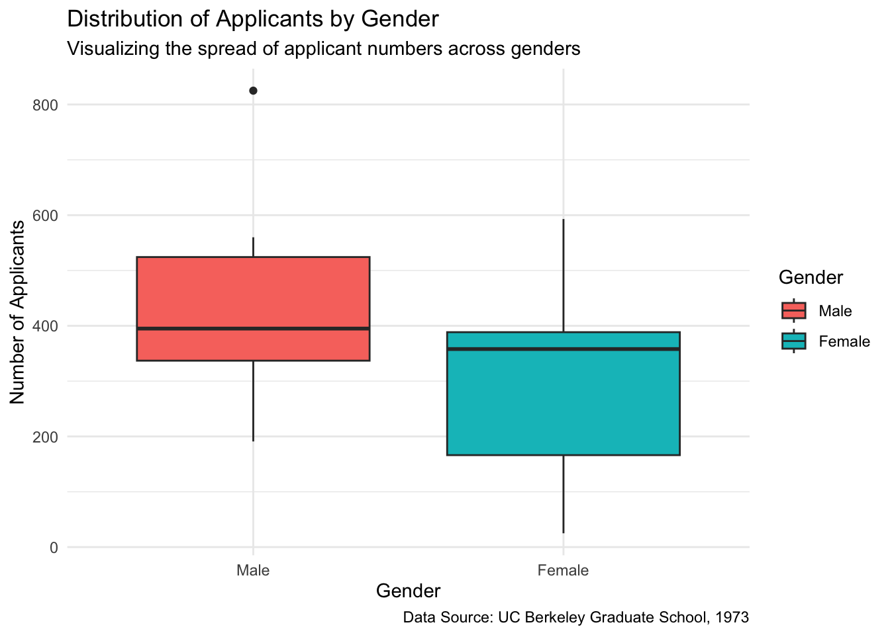

#install.packages("datadictionary")
library(datadictionary)
library(knitr)Example Analysis
Example Analysis: Student Admissions at UC Berkeley
Question: Who applied to graduate school at UC Berkeley in 1973? The data is aggregated by the 6 largest departments (in 1973) and classified by admission and sex.
Intended Audience: This analysis is intended for the UC Berkeley (office of admissions, etc) to understand the population of applicants
More About the Dataset: https://stat.ethz.ch/R-manual/R-devel/library/datasets/html/UCBAdmissions.html
Bickel, P. J., Hammel, E. A., and O’Connell, J. W. (1975). Sex bias in graduate admissions: Data from Berkeley. Science, 187, 398–403. doi:10.1126/science.187.4175.398.
Data Dictionary
Data Wrangling
Loading packages:
library(tidyr)
library(dplyr)
Attaching package: 'dplyr'The following objects are masked from 'package:stats':
filter, lagThe following objects are masked from 'package:base':
intersect, setdiff, setequal, unionlibrary(ggplot2)
library(knitr)
library(grid)#generate the column names
colnames(UCBAdmissions)[1] "Male" "Female"#Convert UCBAdmissions to a data frame if it's not already
UCBAdmissions <- as.data.frame(UCBAdmissions)
#Convert 'freq' to numeric if it's not already
UCBAdmissions$Freq <- as.numeric(UCBAdmissions$Freq)
#filter() - Filter the data to show only admitted applicants
admitted_data <- UCBAdmissions %>%
filter(Admit == "Admit")#group_by() and summarize() - Find the total number of applicants by department and gender
total_applicants <- UCBAdmissions %>%
group_by(Dept, Gender) %>%
summarize(total = sum(Freq), .groups = "drop") #.groups = "drop" to remove all grouping after summarizing#mutate() - Calculate the percentage of admissions by department and gender
admission_percentage <- UCBAdmissions %>%
group_by(Dept, Gender) %>%
mutate(total_applicants = sum(Freq),
admission_rate = Freq / total_applicants * 100) %>%
filter(Admit == "Admit") %>%
select(Dept, Gender, admission_rate)#spread() - Reshape the data to see admission status as columns (easier for comparison)
reshaped_data <- UCBAdmissions %>%
spread(key = Admit, value = Freq, fill = 10)#arrange() - Sort the data by department and gender for easier readability
sorted_data <- UCBAdmissions %>%
arrange(Dept, Gender)
#view "cleaned" data
View(UCBAdmissions)#Create a bar plot comparing genders by department
ggplot(total_applicants, aes(x = Gender, y = total, fill = Gender)) +
geom_bar(stat = "identity", position = "dodge") +
facet_wrap(~ Dept) +
labs(title = "Total Applicants by Gender within Each Department",
subtitle = "Comparing the number of male and female applicants in each department",
x = "Gender",
y = "Number of Applicants",
caption = "Data Source: UC Berkeley Graduate School, 1973") +
theme_minimal()
Note
Important Note on Gender Disparity: The analysis shows a notable gender disparity across all departments! Explore what Depts A-F are to better understand the gender disparity, especially for Dept A.
#Line plot to show trends across departments for each gender
ggplot(total_applicants, aes(x = Dept, y = total, color = Gender, group = Gender)) +
geom_line(size = 1) +
labs(title = "Trend of Applicants by Department and Gender",
subtitle = "Analyzing applicant trends across departments for each gender",
x = "Department",
y = "Number of Applicants",
caption = "Data Source: UC Berkeley Graduate School, 1973"
) +
theme_minimal()Warning: Using `size` aesthetic for lines was deprecated in ggplot2 3.4.0.
ℹ Please use `linewidth` instead.
Note
Important Note on Gender Disparity: The analysis shows a notable gender disparity in admissions across departments. This disparity may reflect broader systemic issues in higher education during the 1970s.
#Adjust margins to make space for margin content
theme(
plot.margin = margin(2, 2, 2, 6), #Increase left margin for space
plot.title = element_text(size = 12, face = "bold"),
plot.subtitle = element_text(size = 10, face = "italic")
) List of 3
$ plot.title :List of 11
..$ family : NULL
..$ face : chr "bold"
..$ colour : NULL
..$ size : num 12
..$ hjust : NULL
..$ vjust : NULL
..$ angle : NULL
..$ lineheight : NULL
..$ margin : NULL
..$ debug : NULL
..$ inherit.blank: logi FALSE
..- attr(*, "class")= chr [1:2] "element_text" "element"
$ plot.subtitle:List of 11
..$ family : NULL
..$ face : chr "italic"
..$ colour : NULL
..$ size : num 10
..$ hjust : NULL
..$ vjust : NULL
..$ angle : NULL
..$ lineheight : NULL
..$ margin : NULL
..$ debug : NULL
..$ inherit.blank: logi FALSE
..- attr(*, "class")= chr [1:2] "element_text" "element"
$ plot.margin : 'margin' num [1:4] 2points 2points 2points 6points
..- attr(*, "unit")= int 8
- attr(*, "class")= chr [1:2] "theme" "gg"
- attr(*, "complete")= logi FALSE
- attr(*, "validate")= logi TRUE#Box plot to show the distribution of applicants by gender
ggplot(total_applicants, aes(x = Gender, y = total, fill = Gender)) +
geom_boxplot() +
labs(title = "Distribution of Applicants by Gender",
subtitle = "Visualizing the spread of applicant numbers across genders",
x = "Gender",
y = "Number of Applicants",
caption = "Data Source: UC Berkeley Graduate School, 1973"
) +
theme_minimal()
[Image showing gender disparity]
According to University of California (1973), there are notable findings on gender disparity. Additionally, Bickel (1975) studied these trends in detail. Refer to Kuning (1973) for additional tables and information about the dataset.
Summary:
Based on data in the University of California (1973), I was able to compare the number of male and female applicants in each department. Comparing across genders in all 6 departments, Dept A has the highest number of male applicants and Dept C has the highest number of female applicants. The department with the closest/most even dispersion between male and female applicants is Dept D. The department with the largest difference between genders is Department A, with a difference of over 700 applicants. Depts A and C are also the two departments with the highest number of applicants (across all genders). From all 3 graphs that were coded for, the bar graph seems to be the most helpful in terms of truly visualizing and understanding the breakdown/dispersion of “male” and “female” across all 6 departments, visualizing which department had the biggest/smallest gender differences, and quantifying which department had the highest/lowest number of applicants.
#list out each of the functions you used from each of the packages (dplyr, tidyr, and ggplot2)
- Your analysis must include some minimal form of data wrangling with you using at least five different functions from
dplyrortidyr.
group_by(), mutate(), filter(), select(), arrange(), spread()
- Your analysis should include at least three plots with you using at least three different geom_() functions from ggplot2 (or another package with geom_() functions).
geom_bar, geom_line, geom_boxplot
- At least one plot should using a type of faceting (facet_grid() or facet_wrap()).
facet_wrap())
- Your analysis must include one image or table (not one you created yourself, but one you have saved locally or one from the web).
I put in an image of UC Berkeley’s Admission’s logo
- Your analysis must include at least two different callout blocks.
Callout box for geom_bar and geom_line and for “note for TA”
References
Bickel, P. J. 1975. “Sex Bias in Graduate Admissions: Data from Berkeley: Measuring Bias Is Harder Than Is Usually Assumed, and the Evidence Is Sometimes Contrary to Expectation.” Science 187 (4175): 398. https://doi.org/10.1126/science.187.4175.398.
Kuning, Metta. 1973. “Admissions to Six Graduate Programs at UC Berkeley in 1973.” https://www.researchgate.net/figure/Admissions-to-six-graduate-programs-at-UC-Berkeley-in-1973_tbl1_266574422.
University of California, Berkeley. 1973. “UC Berkeley Graduate Admissions Dataset.” https://discovery.cs.illinois.edu/dataset/berkeley/.